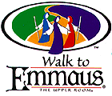

What Happens At Emmaus?
 The "Walk to Emmaus" is a 72 hour experience. The weekend begins on Thursday evening and ends Sunday evening. At Emmaus, you will spend three busy but very enjoyable days, usually at a retreat center. You will live and study together in singing, prayer, worship, and discussion. Discussions center around fifteen talks given by laity and clergy. These talks present the theme of God's grace, and how that grace comes alive in the Christian community and expresses itself in the world. You'll also discover how grace is real in your life, and how you can live in the life of grace, bringing grace to others. You will have the opportunity to participate in the daily celebration of Holy Communion, and to begin to understand more fully the presence of Christ in his body of believers. You will experience God's grace personally through the prayers and acts of service of a living support community.